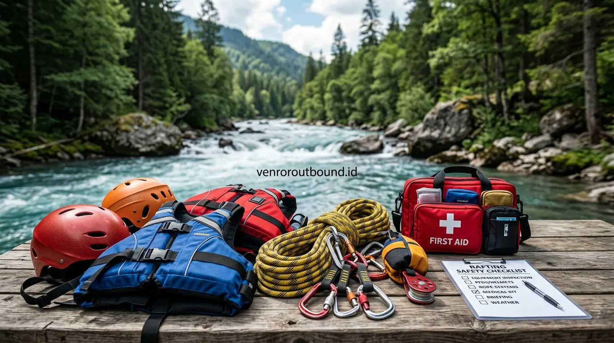

1. Konsep Dasar Manajemen Risiko dalam Kegiatan Luar Ruang
Jawaban singkat: Aktivitas alam bebas memiliki potensi bahaya yang perlu dikelola sejak tahap perencanaan. Saat memilih provider outbound plus rafting, perusahaan dan peserta sebaiknya memeriksa prosedur keselamatan, kompetensi fasilitator, kondisi peralatan, risk assessment, safety briefing peserta, rencana keadaan darurat (ERP), serta perlindungan asuransi yang tersedia. Detail perlindungan harus dikonfirmasi berdasarkan aktivitas dan penawaran yang berlaku.
Penyelenggaraan kegiatan luar ruang (outdoor experiential learning) bagi korporasi dan komunitas bertujuan untuk membangun dinamika tim, melatih ketangguhan mental, serta menyegarkan motivasi kerja karyawan. Namun, berada di alam terbuka berarti berinteraksi dengan lingkungan dinamis yang tidak dapat sepenuhnya dikendalikan oleh manusia—seperti kontur tanah berbatu, jeram sungai beraliran deras, vegetasi licin, hingga fluktuasi cuaca ekstrem.
Dalam konteks Keselamatan dan Kesehatan Kerja (K3) outdoor, manajemen risiko (risk management) adalah proses sistematis yang mencakup identifikasi potensi bahaya (hazard identification), penilaian tingkat kemungkinan dan keparahan dampak (risk assessment), perumusan langkah pencegahan (risk mitigation), serta penyiapan prosedur penanganan bila terjadi insiden darurat.
Penting untuk dipahami bahwa risiko di alam terbuka tidak dapat dihilangkan hingga nol persen secara mutlak. Namun, penerapan risk management yang disiplin dan terstruktur dapat membantu mengurangi potensi bahaya secara signifikan, sehingga kegiatan tetap menantang dan mendidik tanpa mengorbankan keselamatan jiwa peserta.
2. Tahapan Identifikasi Bahaya & Hierarchy of Controls di Alam Bebas
Untuk mengelola keselamatan kegiatan outbound secara profesional, fasilitator dan panitia internal perlu memahami kerangka kerja pengendalian risiko (Hierarchy of Controls) yang diadaptasi untuk lingkungan kegiatan luar ruang:
- Eliminasi (Elimination): Menghilangkan unsur bahaya yang tidak esensial. Misalnya, membatalkan rute trekking yang melewati tebing terjal berkondisi tanah longsor atau membatalkan sesi arung jeram bila debit air sungai meluap melampaui ambang batas aman (warning level).
- Substitusi (Substitution): Mengganti media atau lokasi dengan alternatif yang lebih aman. Contohnya, mengganti modul low rope ke area lapangan rumput datar yang bebas dari akar pohon menonjol saat tanah basah diguyur hujan.
- Kontrol Rekayasa Teknis (Engineering Controls): Memastikan seluruh fasilitas fisik dan properti permainan memenuhi standar kelaikan pakai. Misalnya, memasang tali pemandu (handline) pada jalur penyeberangan sungai berbatu atau memeriksa kekuatan jangkar tambatan tali flying fox.
- Kontrol Administratif (Administrative Controls): Menerapkan safety briefing wajib sebelum aktivitas dimulai, pembatasan rasio jumlah peserta terhadap fasilitator pendamping, pengisian formulir riwayat kesehatan (medical declaration), serta pemasangan papan penunjuk batas aman.
- Alat Pelindung Diri (APD / PPE): Menggunakan helm pelindung benturan (outdoor helmet), pelampung berdaya apung tinggi (Personal Flotation Device / PFD tipe III/V), sepatu berdaya cengkeram kuat, dan sarung tangan pelindung gesekan tali.
3. Profil Risiko: Outbound Darat vs Aktivitas Air (Rafting)
Setiap jenis aktivitas luar ruang memiliki karakteristik bahaya yang sangat spesifik. Mengetahui perbedaan profil risiko antara kegiatan di darat dan di air membantu tim HR dan Procurement dalam menilai kesiapan operasional provider:
| Dimensi Penilaian | Outbound Darat & Team Building | Aktivitas Air (Outbound Plus Rafting) |
|---|---|---|
| Potensi Bahaya Utama | Tergelincir, tersandung akar, kram otot, dehidrasi, sengatan serangga | Tenggelam, perahu terbalik (flip), benturan bebatuan jeram, hipotermia |
| Ketergantungan Peralatan | Tali temali, cone, puzzle props, sound system lapangan | Perahu karet standar whitewater, dayung fiberglass, PFD/pelampung, helm air, throw bag |
| Kompetensi Kunci Kru | Fasilitator dinamika kelompok, pemandu games, instruktur P3K | Skipper / river guide berlisensi rescue air, tim rescue darat (sweeper), pemantau debit hulu |
| Kondisi Fisik Peserta | Stamina dasar, mobilitas persendian, kesiapan kardio ringan | Tidak memiliki fobia air berlebih, bebas riwayat epilepsi/asma berat, mampu mengapung tenang |
| Tingkat Ketergantungan Cuaca | Dapat beralih ke aula tertutup bila hujan sedang/lebat | Sangat krusial; kenaikan debit air hulu sungai dapat menghentikan aktivitas seketika |

4. Mengelola Variabel Medan, Perubahan Cuaca, dan Kesiapan Peserta
Dalam ekosistem luar ruang, terdapat tiga variabel dinamis yang saling berinteraksi dan menentukan derajat risiko kegiatan:
A. Kondisi Medan & Lokasi (Environmental Hazard)
Lokasi perbukitan atau tepi sungai memiliki kontur tanah yang rentan berubah setelah diguyur hujan. Fasilitator profesional wajib melakukan survei pra-kegiatan untuk memetakan titik-titik licin, semak berduri, tebing curam, serta area evakuasi terdekat yang mudah dijangkau kendaraan operasional.
B. Dinamika Cuaca & Pemantauan Hulu Sungai
Pada program outbound plus rafting, cuaca di lokasi start mungkin cerah, namun hujan lebat di kawasan pegunungan hulu dapat memicu banjir bandang (flash flood) secara tiba-tiba. Provider yang bertanggung jawab selalu menempatkan tim pemantau (early warning spotter) di titik hulu sungai untuk memberikan sinyal evakuasi dini bila debit air mengalami lonjakan warna dan volume.
C. Profil Kesehatan dan Kesiapan Mental Peserta
Peserta corporate gathering memiliki latar belakang usia dan tingkat kebugaran yang heterogen. Panitia HR wajib mendistribusikan kuesioner skrining kesehatan sebelum hari H untuk mengidentifikasi riwayat penyakit kritis (jantung, hipertensi, asma, pasca-operasi tulang, atau kehamilan). Fasilitator kemudian dapat memberikan rekomendasi aktivitas non-fisik bagi peserta berkebutuhan khusus agar tetap dapat berpartisipasi dengan aman.
5. Standar Operasional Keselamatan: Briefing, Peralatan, & Lisensi Fasilitator
Keselamatan di lapangan bertumpu pada kepatuhan terhadap tiga pilar Standard Operating Procedure (SOP):
- Safety Briefing Terstruktur & Wajib: Sebelum menyentuh peralatan apa pun, seluruh peserta wajib mengikuti sesi pengarahan keselamatan. Pada aktivitas rafting, briefing mencakup cara memegang dayung dengan benar agar gagang T-grip tidak membentur rekan di depan, posisi tubuh saat perahu meluncur di jeram (boom command), teknik wet exit (keluar dari bawah perahu bila terbalik), serta cara berenang pasif (defensive swimming) menghadap hilir dengan kaki mengambang di atas air.
- Pemeriksaan Kelaikan Peralatan (Pre-Use Inspection): Seluruh perlengkapan keselamatan harus diperiksa sebelum digunakan. Tali karmantel diperiksa kelenturan dan keutuhan serabut intinya, jahitan harness dan pelampung diperiksa dari keausan, serta helm dipastikan memiliki busa peredam utuh tanpa keretakan cangkang luar.
- Lisensi Resmi Fasilitator & River Guide: Keberadaan instruktur yang tersertifikasi oleh Badan Nasional Sertifikasi Profesi (BNSP) di bidang kepemanduan outbound atau sertifikasi Federasi Arung Jeram Indonesia (FAJI) menjamin bahwa pemandu memiliki kompetensi teknis, pemahaman psikologi massa, serta keterampilan evakuasi dan pertolongan pertama (First Aid / CPR) teruji.
6. Rencana Tanggap Darurat (Emergency Response Plan) & Asuransi Kegiatan
Meskipun upaya pencegahan telah dilakukan semaksimal mungkin, setiap penyelenggaraan outbound wajib memiliki dokumen Emergency Response Plan (ERP) yang jelas dan telah disosialisasikan kepada seluruh kru lapangan:
- Alur Komunikasi Darurat: Penetapan siapa penanggung jawab komando medis di lapangan, frekuensi radio komunikasi / nomor darurat, serta pembagian tugas kru rescue darat dan air.
- Penetapan Jalur Evakuasi Medis: Rute tercepat dari titik terjadinya insiden menuju jalan utama yang dapat dilalui ambulans atau kendaraan operasional penjemput.
- Pusat Layanan Kesehatan Rujukan: Informasi tertulis mengenai nama, alamat, nomor kontak gawat darurat, dan estimasi waktu tempuh menuju klinik, puskesmas, atau rumah sakit terdekat dari venue kegiatan.
- Ketentuan Asuransi Kecelakaan: Perlindungan asuransi kecelakaan diri (Personal Accident) memberikan jaminan ketenangan bagi perusahaan dan keluarga peserta. Namun demikian, ketersediaan asuransi, batas plafon santunan medis, dan prosedur klaim wajib dikonfirmasi berdasarkan paket dan dokumen penawaran resmi yang diterbitkan oleh provider.
7. Checklist Verifikasi Safety & Red Flags Provider Outbound untuk HR
Sebelum tim Procurement atau panitia HR menandatangani perjanjian kerja sama pengadaan kegiatan outbound, gunakan tabel checklist verifikasi berikut untuk menguji kesiapan K3 calon mitra vendor:
| Aspek Keselamatan | Pertanyaan Kunci yang Wajib Diajukan HR | Standar Jawaban yang Diharapkan |
|---|---|---|
| Risk Assessment | Apakah risiko spesifik di lokasi kegiatan telah dipetakan secara tertulis? | Vendor mampu menunjukkan dokumen identifikasi bahaya dan mitigasi rute. |
| Safety Briefing | Apakah seluruh peserta mendapatkan safety briefing wajib sebelum game? | Tersedia alokasi waktu khusus dalam rundown untuk simulasi instruksi keselamatan. |
| Kondisi Equipment | Apakah perlengkapan diperiksa kelaikannya secara berkala sebelum event? | Peralatan bersih, memiliki standar SNI/CE/UIAA, dan tidak menggunakan alat usang. |
| Kompetensi Fasilitator | Siapa yang memimpin aktivitas dan apa bukti sertifikasi keahliannya? | Dipimpin oleh master fasilitator / river guide berlisensi resmi BNSP atau FAJI. |
| Emergency Plan (ERP) | Bagaimana prosedur evakuasi jika terjadi keadaan darurat di lokasi? | Tersedia alur komando tertulis, kendaraan siaga darurat, dan tim rescue lapangan. |
| Fasilitas Medis | Bagaimana akses bantuan medis dan jarak faskes rujukan terdekat? | P3K outdoor lengkap dan data faskes rujukan (waktu tempuh < 30 menit). |
| Proteksi Asuransi | Apa cakupan perlindungan asuransi kecelakaan yang disertakan dalam paket? | Tercantum rincian pertanggungan atau klausul konfirmasi sesuai kesepakatan penawaran. |
| Kontinjensi Cuaca | Apa prosedur operasional jika kondisi cuaca di lokasi tidak mendukung? | Tersedia modul alternatif dalam ruangan (Plan B) dan titik kumpul aman. |
Tanda Bahaya (Red Flags) Saat Memilih Vendor Outbound:
- Menawarkan harga luar biasa murah namun enggan merinci spesifikasi peralatan dan rasio instruktur pendamping.
- Mengklaim kegiatan luar ruang "100% pasti aman tanpa risiko sama sekali" tanpa menjelaskan SOP mitigasi bahaya.
- Tidak memiliki rencana cadangan (Plan B) saat terjadi hujan lebat atau kenaikan debit air sungai mendadak.
- Fasilitator lapangan tidak memiliki kartu identitas kompetensi profesi kepemanduan resmi.
Utamakan Keselamatan Tim Kerja Anda
Pastikan kebutuhan kegiatan, standar K3, dan prosedur keselamatan acara luar ruang dikoordinasikan bersama tim ahli VENDOR OUTBOUND.
Hubungi Kami via WhatsApp8. Kesimpulan & Rekomendasi Pelaksanaan Program
Kegiatan outbound di alam terbuka dan petualangan arung jeram (outbound plus rafting) merupakan media pembelajaran yang sangat efektif untuk memperkuat karakter, komunikasi, dan sinergi tim kerja. Namun, esensi petualangan hanya akan memberikan dampak positif yang berkesan bila didukung oleh tata kelola keselamatan yang disiplin.
Manajemen risiko bukanlah penghambat keseruan acara, melainkan fondasi utama yang memungkinkan seluruh peserta mengeksplorasi potensi diri mereka dengan rasa aman dan percaya diri. Dengan memastikan pemilihan vendor yang berlisensi, memeriksa kelengkapan peralatan, mematuhi instruksi safety briefing, serta menyiapkan prosedur darurat yang matang, perusahaan dapat mewujudkan agenda gathering yang inspiratif, menyenangkan, dan bertanggung jawab.
Pertanyaan Sering Diajukan (FAQ)

Arby Ardiansyah
Arby Ardiansyah menulis konten informatif mengenai outbound, team building, corporate gathering, wisata outdoor, dan perencanaan kegiatan kelompok berbasis standar manajemen risiko terpadu di Indonesia.